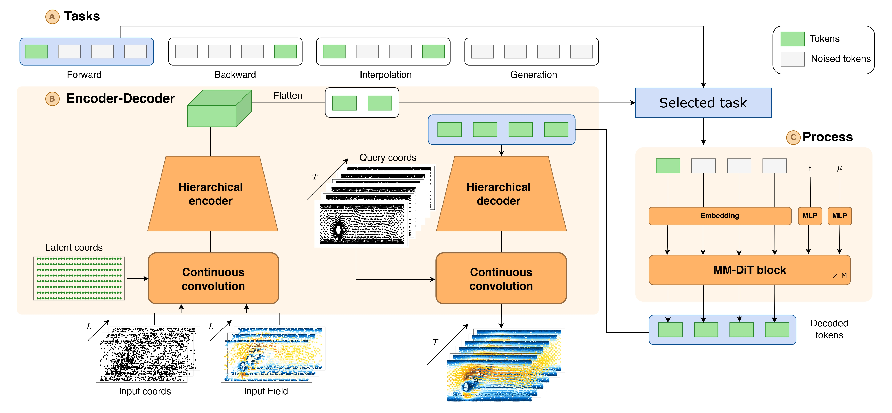
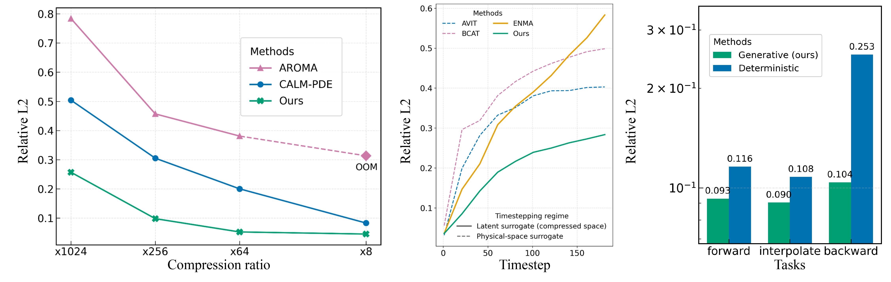
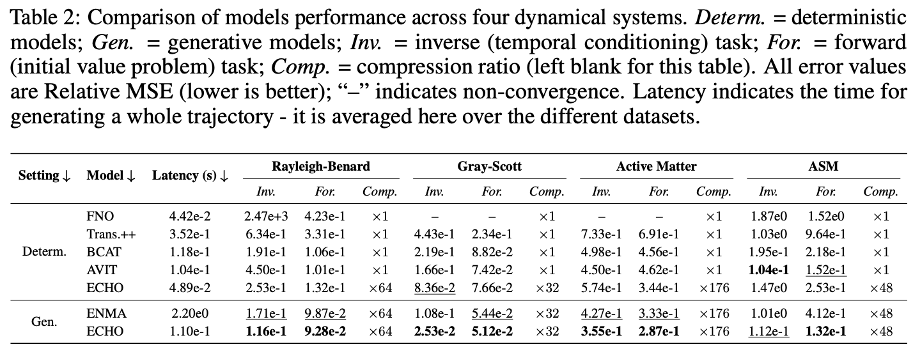
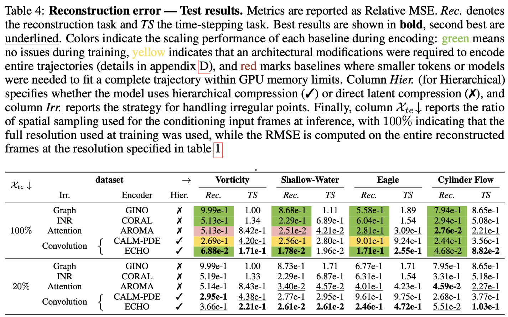
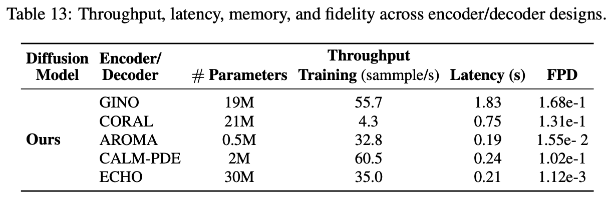
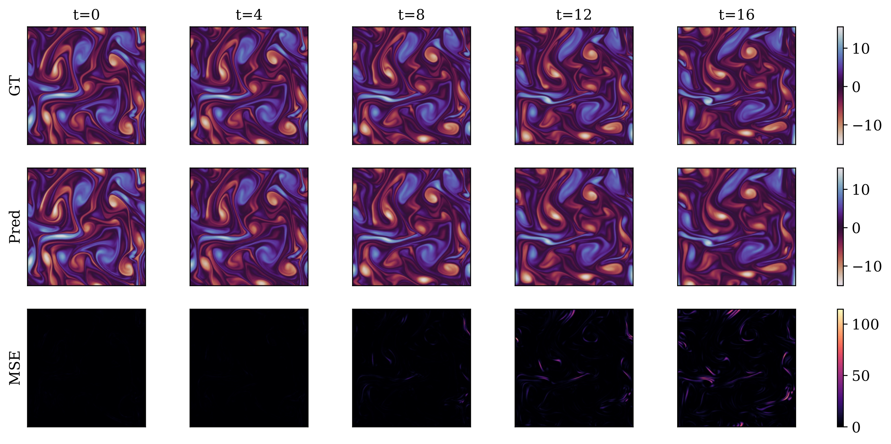
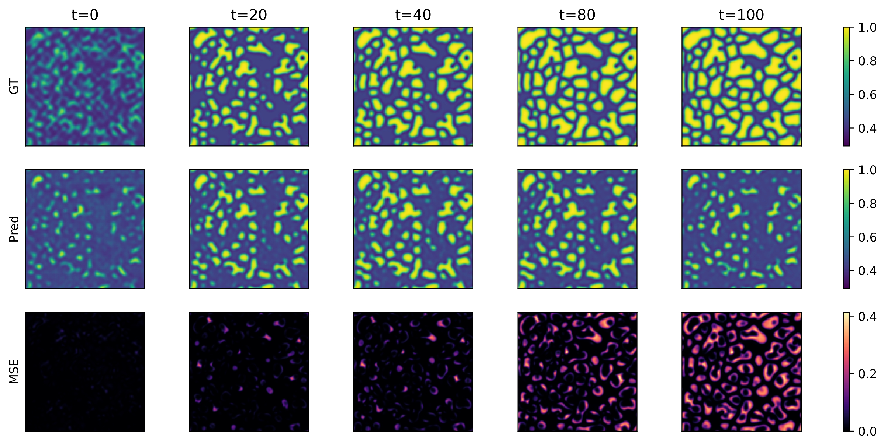

We introduce ECHO, a transformer–operator framework for generating million- point PDE trajectories. While existing neural operators (NOs) have shown promise for solving partial differential equations, they remain limited in practice due to poor scalability on dense grids, error accumulation during dynamic unrolling, and task-specific design. ECHO addresses these challenges through three key innovations. (i) It employs a hierarchical convolutional encode–decode architecture that achieves a 100× spatio-temporal compression while preserving fidelity on mesh points. (ii) It incorporates a training and adaptation strategy that enables high-resolution PDE solution generation from sparse input grids. (iii) It adopts a generative modeling paradigm that learns complete trajectory segments, mitigating long-horizon error drift. The training strategy decouples representation learning from downstream task supervision, allowing the model to tackle multiple tasks such as trajectory generation, forward and inverse problems, and interpolation. The generative model further supports both conditional and unconditional generation. We demonstrate state-of-the-art performance on million-point simulations across diverse PDE systems featuring complex geometries, high-frequency dynamics, and long-term horizons.
ECHO is a transformer-based operator built on an encode–generate–decode framework designed for efficient spatio-temporal PDE modeling at scale. It allows us to handle million-point trajectories on arbitrary domains (see Figure bellow). ECHO is the first generative transformer operator addressing under a unified formalism forward and inverse tasks, while operating in a compressed latent space, allowing scaling to high-resolution inputs from arbitrary domains.

The figure below illustrates the benefits of principles (i)–(iii): (left) our spatio-temporal encoder achieves a compression ratio versus relative L2 error that is markedly superior to state-of-the-art baselines enabling large scale applications; (center) its trajectory-generation procedure is far less prone to error accumulation, enabling long-horizon forecasts; and (right) the generative modeling paradigm outperforms deterministic alternatives.





